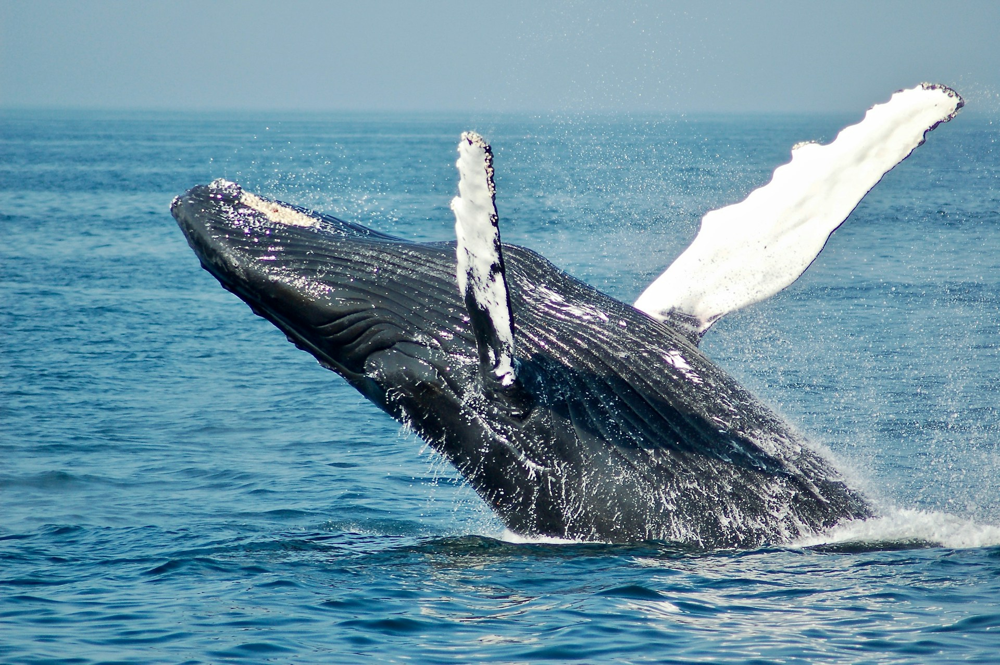
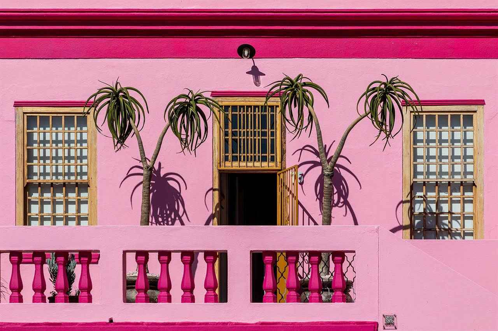

7 Hidden Gems in the Western Cape Most Tourists Drive Right Past
When you spend every week guiding travellers across the Western Cape, you notice something funny: 95% of visitors cluster into the exact same five parking lots, while 500 metres down the road lies an empty granite cove, a mountain waterfall trail, or a cliffside drive without a single tour coach in sight. Here are seven Western Cape hidden gems worth slowing down for.

Why Off-Beat Detours Make the Best Memories
- Zero Bus Crowds: Most large coaches cannot turn down narrow coastal lanes like Water's Edge in Simon's Town or stop at smaller viewpoints along Clarens Drive.
- Better Wildlife Encounters: From Stony Point's uncrowded penguin colony in Betty's Bay to Southern Right Whales breaching along De Kelders, quieter spots let you watch wildlife in peace.
- Easy to Combine: Every hidden gem below sits right alongside our classic Peninsula, Winelands, or Whale Coast routes.
1. Clarens Drive (R44) Between Gordon’s Bay and Rooi-Els
Everyone raves about Chapman’s Peak Drive—and rightly so—but its eastern twin across False Bay is arguably just as dramatic and carries a fraction of the traffic. Leaving Gordon’s Bay on the R44 (Clarens Drive), the road hugs the sheer cliffs of the UNESCO-protected Kogelberg Biosphere Reserve for 21 kilometres toward Rooi-Els and Pringle Bay.
On a clear day, you look straight across the turquoise expanse of False Bay to Cape Point on the far horizon. Between July and November, Southern Right Whales often surface right below the roadside whale-watching lookouts. Stop at the sweep of white sand at Kogel Bay (locally known as "Caves" among bodyboarders and surfers) to watch the waves crash against the mountain amphitheatre.
2. Water’s Edge & Windmill Beach (Right Next to Boulders Beach)
Boulders Beach in Simon’s Town is world-famous for its endangered African Penguins, and the main Foxy Beach boardwalk is a must-see. What most visitors don’t realise is that just a few hundred metres away—through a tiny wooden gate tucked beside a stone wall—lies Water’s Edge, along with neighbouring Windmill Beach.

Protected by the same giant 540-million-year-old granite boulders, these quiet coves have crystal-clear, calm water, rock pools teeming with starfish and sea anemones, and regular visits from curious penguins waddling across the rocks—without the dense crowds at the main turnstile.
3. Stony Point Penguins & Leopard’s Kloof Waterfall in Betty’s Bay
Continuing along the Whale Coast past Rooi-Els brings you into the laid-back coastal village of Betty’s Bay. Here, built over the concrete ruins of an old early-1900s whaling station at Stony Point Nature Reserve, lives one of the largest land-based breeding colonies of African Penguins in the world—alongside three species of cormorants and dozens of furry rock dassies (hyraxes) sunning themselves on the rocks.
Five minutes inland in the same village sits Harold Porter National Botanical Garden. Follow the shaded Disa River trail into the mountain ravine to discover cascading amber rock pools and waterfalls surrounded by wild red disas and king proteas.
4. The Hemel-en-Aarde ("Heaven & Earth") Wine Valley
While Stellenbosch and Franschhoek get 90% of the international spotlight, wine lovers in the know head 90 minutes southeast of Cape Town to the Hemel-en-Aarde Valley rising behind Hermanus.

Cooled by icy Atlantic breezes rolling off Walker Bay, this valley produces South Africa’s most sought-after cool-climate Pinot Noir and Chardonnay. Estates like Creation, Hamilton Russell, Newton Johnson, and Ataraxia (whose tasting room sits inside a whitewashed mountain chapel) offer unhurried, deeply personal tastings paired with local tapas.
5. Upper Cobblestone Lanes & Home-Baked Koesisters in Bo-Kaap
Most tourists stop for ten minutes on Wale Street in the Bo-Kaap, snap a quick photo in front of the bright pink and lime-green houses, and hop back on their bus. To really feel the soul of Cape Town’s historic Cape Malay quarter, walk up the steep 19th-century cobblestone lanes higher on the slopes of Signal Hill—like Chiappini, Rose, and Pentz Streets.

Step inside Atlas Trading Company (where burlap sacks of roasted masala, cardamom, and turmeric have perfumed the air since 1946) and sample a warm, syrup-dipped Cape Malay koesister dusted with desiccated coconut—spiced with cinnamon, aniseed, and ginger, and completely different from the braided Afrikaner koeksister.
6. Silvermine Reservoir Boardwalk & Constantia Nek Lookouts
High up on Ou Kaapse Weg between the Constantia wine valley and Noordhoek sits the Silvermine section of Table Mountain National Park. A flat, wheelchair- and stroller-friendly wooden boardwalk loops around a high-altitude mountain dam surrounded by proteas and sandstone crags, while a gentle 40-minute trail leads out to Noordhoek Peak with a jaw-dropping view straight down over Hout Bay, Chapman’s Peak, and Long Beach.
7. Turquoise Lagoons of Langebaan & West Coast National Park
Drive just 75 minutes north up the R27 West Coast road and the dramatic granite peaks of Cape Town give way to the blindingly white sandbars and tropical-looking turquoise shallows of the Langebaan Lagoon inside the West Coast National Park. At Kraalbaai, the sheltered lagoon water is calm and warm enough for swimming all afternoon, and on the drive back you can stop in the quirky country village of Darling for craft beer and hand-pulled butter toffees.
Want to explore the Western Cape’s hidden gems with a local guide?
Skip the cookie-cutter group tours. Chat directly with me on WhatsApp and let’s build a private full-day itinerary combining Cape Town’s icons with the secret coves, mountain passes, and boutique cellars most tourists never see.